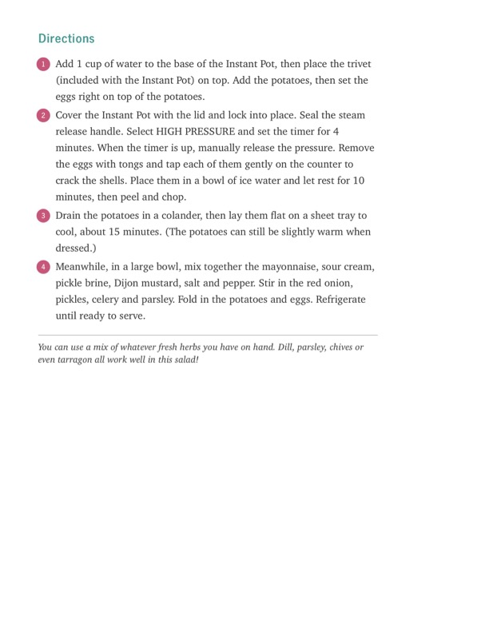

Instant Pot Potato Salad (directions continued)

Original cookbook page 199
Continuation of the Instant Pot Potato Salad recipe showing the complete cooking instructions.
Cook: 4 minutes (pressure cook) • Total: 30-35 minutes
Ingredients
- Referenced from previous pages - includes potatoes, eggs, water, mayonnaise, sour cream, pickle brine, Dijon mustard, salt, pepper, red onion, pickles, celery, parsley
Instructions
- Add 1 cup of water to the base of the Instant Pot, then place the trivet (included with the Instant Pot) on top. Add the potatoes, then set the eggs right on top of the potatoes.
- Cover the Instant Pot with the lid and lock into place. Seal the steam release handle. Select HIGH PRESSURE and set the timer for 4 minutes. When the timer is up, manually release the pressure. Remove the eggs with tongs and tap each of them gently on the counter to crack the shells. Place them in a bowl of ice water and let rest for 10 minutes, then peel and chop.
- Drain the potatoes in a colander, then lay them flat on a sheet tray to cool, about 15 minutes. (The potatoes can still be slightly warm when dressed.)
- Meanwhile, in a large bowl, mix together the mayonnaise, sour cream, pickle brine, Dijon mustard, salt and pepper. Stir in the red onion, pickles, celery and parsley. Fold in the potatoes and eggs. Refrigerate until ready to serve.
Recipe #199 from collection